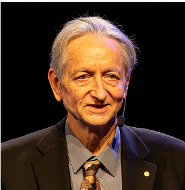

Geoffrey Hinton is a British-Canadian computer scientist known for his pioneering work in Artificial Intelligence and neural networks. He played a major role in the development of deep learning, which is widely used in modern AI systems.
• Developed important techniques for training neural networks.
• Helped advance deep learning used in speech recognition,
image recognition, and AI systems.
• Worked with major technology companies and research institutions.
• Turing Award (2018) for contributions to deep learning.
• Many international awards in computer science and AI research.